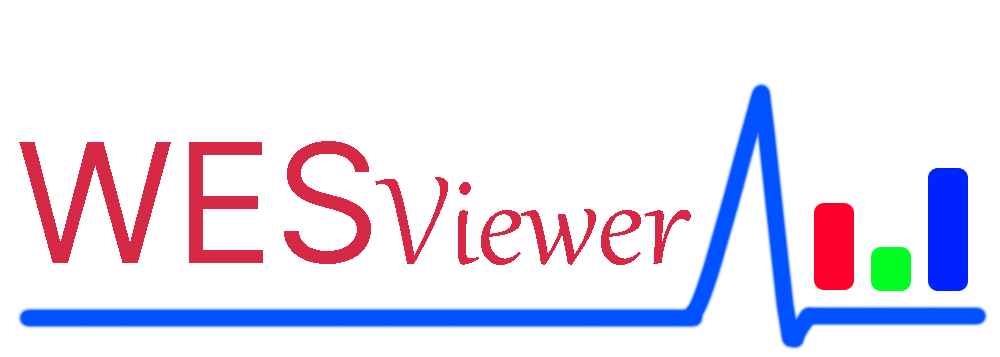

工具与数据/能谱查看
辐射光谱显示工具 WESViewer

什么是WESViewer
WESViewer是基于开源的SV项目重新制作的显示辐射测量仪器光谱数据的工具
此项目根据MIT 许可证发布[1]
前言
它是一个可以在H5上显示辐射测量仪器光谱数据的工具。
网上有很多人将放射线测量仪器的光谱以图片等方式发表，但很难用图像确认峰值部分的能量，因此很不方便。
另外，如果你以后试图重新分析光谱数据，如果不是原始数据，将很难重新使用这些数据。
如果光谱的原始数据能够公开，而且可以随时查看，以便以后可以重新验证数据，那将是非常有用的。
截屏


光谱案列
- 光谱案列(各种核素)
- 雨天样本光谱
- 常见同位素
您要是有需要展示的光谱我可以帮忙上传，如果您愿意帮忙增加列表我将感激不尽，请通过XkXiaoYi475@outlook.com与我联系。
使用方法
光谱查看方法
有两种模式：一种是显示单个光谱，一种是同时显示两个光谱。
在"[光谱显示][光谱比较（B-A）]"部分进行选择。
1个光谱显示
当你选择一个光谱文件时，光谱会显示在下面。
光标位置的信息显示在图表下方。
当选择一个范围时，该范围的信息就会显示在图表的下面。
也可以用按钮选择范围。 (见下面的范围预设功能）。
在选择了一个范围后，可以通过按 "放大 "按钮来放大图表。
"放大"按钮可以取消放大。
当选择了一个范围后，使用---法计算净cps。
在 "BG计算宽度 "的选定比例中，从选定范围的左边和右边抽取通道的数量，并使用平均值来计算背景的数量。
使用平均值得到的线显示为红线。
红线的左右边缘是用来寻找BG部分的平均值的中心部分的区域。
所选范围的背景显示为红色，而用于使用---方法寻找BG值的左右两边区域显示为灰色。
选择一个范围，点击 "选择左侧BG范围 "或 "选择右侧BG范围"，然后选择范围，将该区域指定为左侧或右侧BG计算区域。
勾选 " 显示对数 "复选框将以对数形式显示图表。
BG光谱对比
比较两个频谱文件，其中一个作为BG。
如果您在 A 侧选择BG，在 B 侧选择测量的频谱，频谱将显示在下面。
如果B面的光谱文件包含核素信息，它也会被显示。
然而，核素和 ROI 的高亮显示只在显示一个光谱时有效。
光标位置的信息显示在图形下方。
当选择一个范围时，该范围的信息将显示在图表下方。
在选择了一个范围后，可以用 "放大 "按钮放大图形。
缩小 "按钮用于取消放大。
当选择了一个范围后，两个光谱之间的差异将被计算出来。
勾选 " 显示对数 "复选框会以对数比例显示图表。
多光谱比较
一次最多比较五个光谱。
勾选光谱，然后按下列表下面的显示光谱按钮，就可以将它们全部显示出来。
更新历史
- Ver 1.1
- 增加了对Radiacode的支持
- Ver 1.0
- 第一版